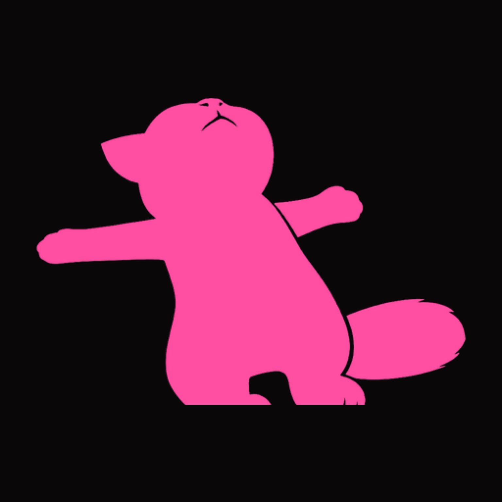

♫
Controles completos
Reproducir, pausar, canción anterior y siguiente, repetir en bucle, aleatorio y favoritos ♥.

GATO TONGato Ton es un reproductor de música offline para Android. Escuchá las canciones que ya tenés en tu teléfono, sin WiFi, sin datos y sin cuenta.
Gratis · Sin anuncios integrados · La música se queda en tu dispositivo
Una biblioteca musical simple, personal y guardada en tu propio teléfono.
Reproducir, pausar, canción anterior y siguiente, repetir en bucle, aleatorio y favoritos ♥.
Una cabeza de gatito acompaña el progreso de la canción. Arrastrala para saltar al momento que quieras.
Creá, renombrá y eliminá listas para organizar la música como más te guste.
Editá el nombre, el artista y la portada de cada tema de tu biblioteca.
Buscá en tu biblioteca y entrá a una pestaña dedicada a tus canciones favoritas.
Guarda en el teléfono las canciones añadidas, playlists, favoritos y los cambios que hagas.
Vista previa ilustrativa · no reproduce audio
Una interfaz con personalidad, pensada para que tu música sea la protagonista. Probá los controles de esta maqueta: son interactivos, aunque no reproducen audio real.
No incluye, aloja ni distribuye música ni contenido protegido por derechos de autor. Tampoco sube tus archivos a servidores. Gato Ton trabaja únicamente con los archivos que ya tenés en tu dispositivo.
Gato Ton es un proyecto sin fines de lucro, de código abierto en espíritu y actualmente en beta cerrada.
Descargá Gato Ton e instalalo en tu Android. Usá tus propios archivos de audio y escuchá sin conexión.
↓ DESCARGAR GATO TON (APK)